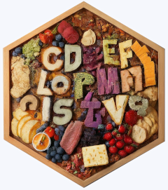

Changelog
Source:NEWS.md
charcuterie 0.0.6
- added explicit {vctrs} dependency (needed by
testthat::expect_vector())
charcuterie 0.0.5
- added
count(); “strawberry” has 3 ’r’s
charcuterie 0.0.4
CRAN release: 2024-09-13
- fix for CRAN error of vignette image
- added
is_number(),is_letter(),is_alnum(), andis_punct()
charcuterie 0.0.2
- use {generics} for setdiff, union, intersect generics - thanks to @DavisVaughan
charcuterie 0.0.1
- refactored internals - thanks to @barryrowlingson